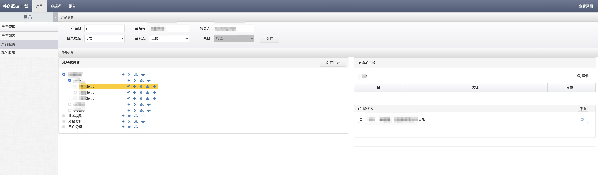

网心-Eagle可视化邮件配置推送系统
角色
设计开发负责人
背景
快速配置邮件，支持文字，图形和表格
开发工具
- 前端开发框架: js,jquery,jqueryuid,seajs,mmgrid,laydate,highcharts,bootstrap,css3,html5
- 后端开发语言: php7
- 后端开发框架: cakephp3.0,PhpMailer,chromephp,composer,swoole
- 数据存储: mysql5.7
- 数据缓存: memcached
- 共享存储: glusterfs,nfs,minio
- 数据接入: openresty+php-fpm
- 负责均衡: haproxy
- 图片导出: phantomjs,highcharts
整体架构
功能模块
- 数据源管理
- 数据源权限管理
- 报告管理
- 产品及目录管理
- 报告查看模块
- 报告预览模块
- 报告定时发送模块
- Api管理模块
使用情况
eagle项目是一个邮件推送系统，每天把老板，产品，运营，开发关注的核心指标发送到他们的邮箱中。
系统提供可拖曳的可配置的方式，支持从mysql，api拉取数据，配置文字，图形，表格等邮件元素，
并支持自定义格式，自定义变量，自定义样式，把生成的最终邮件推送到收件人的信箱。
项目实现了几分钟到1个小时就可以配置出一封图文并茂的邮件。
系统也支持大数据量的展示，对于html邮件格式支持比较好。
当前系统总共配置了170多封日报，每天发送101封日报，1300个元素，
使老板和产品开发运营人员方便掌握业务概框和详情。
系统截图
报告管理
报告配置


邮件预览
数据源管理
产品管理
产品目录管理 
报告查看